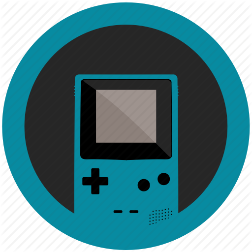

Los emuladores son programas informáticos diseñados para imitar el comportamiento de un sistema de hardware o software específico en otro sistema que no es nativo de ese hardware o software.
En términos simples, permiten que un dispositivo (como una computadora o un teléfono inteligente) simule las funciones y el entorno de otro dispositivo (como una consola de juegos, una computadora más antigua o un sistema operativo diferente).
Por ejemplo, un emulador de consola de juegos podría permitir a una computadora moderna ejecutar juegos diseñados originalmente para una consola de juegos más antigua, replicando el hardware y el software de la consola para que los juegos funcionen correctamente en el nuevo entorno.
Del mismo modo, un emulador de sistema operativo podría permitir ejecutar programas diseñados para un sistema operativo específico en otro sistema operativo diferente.
Los emuladores son útiles para una variedad de propósitos, incluyendo preservación histórica de software, desarrollo de software, pruebas de aplicaciones y juegos, y permitir que hardware más nuevo ejecute software más antiguo que de otra manera no sería compatible.
En esta página me estaré enfocando en los emuladores de videojuegos, ya que, como dije anteriormente, esto es un repositorio de emuladores
(pero de videojuegos).
En la misma lista desplegable de arriba podrás ver información sobre consolas y los emuladores mas usados y estables (únicamente para Windows),
estos mismos creados por la comunidad, sin embargo debo aclarar una cosa MUY IMPORTANTE.
Si bien, el compartir, crear y usar emuladores es completamente legal, la distribucion de ROMS y BIOS es todo lo contrario, ya que infringe derechos de autor, por lo que, en esta página no proporcionaré ni compartiré ninguno. ¡Les recomiendo que usen sus propios ROMS!